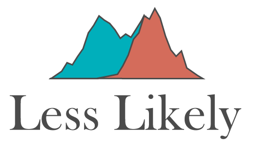

Your Models Are Neither Useful Nor Approximate
statistics
A discussion about models and the assumptions that underlie them.

Discussions on statistical science and the applications of statistical methods
Found an issue or want to contribute? Visit the GitHub repository :::